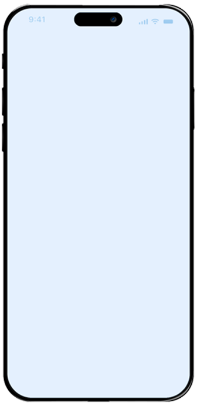

SUA EMPRESA NA PALMA
DAS SUAS MÃOS

O DESAFIO EXECUTIVO
LIDERAR COM DADOS FRAGMENTADOS
É UMA DESVANTAGEM REAL.
Executivos de empresas médias e grandes enfrentam um paradoxo crítico: quanto mais a operação cresce, mais difícil se torna enxergar o todo com clareza.
Oportunidades perdidas por falta de clareza
Sem visibilidade estratégica consolidada, riscos e oportunidades passam despercebidos até que seja tarde demais para agir.
Dependência operacional para obter dados
Para saber o real desempenho do negócio, é necessário convocar reuniões, aguardar planilhas e interpretar dados que chegam sem contexto estratégico.
Ausência de visão macro em tempo real
Sem uma visão integrada e atualizada, decisões importantes são tomadas com base em informações parciais, aumentando o risco e reduzindo a velocidade de reação.
NOSSA PLATAFORMA
INTELIGÊNCIA EMPRESARIAL
QUE CABE NA AGENDA DE UM
CEO.
Integração com seu CRM
A plataforma se conecta ao sistema de gestão de clientes que sua empresa já utiliza, sem necessidade de migração ou substituição de ferramentas.
Centralização de informações críticas
Vendas, compras, marketing, estoque, produtividade e performance reunidos em um único ambiente de visualização executiva.
Desenvolvido com decisões estratégicas
Cada dashboard foi desenvolvido com foco no que o líder precisa enxergar: tendências, variações, alertas e oportunidades.
Visão executiva simplificada
Informações complexas traduzidas em indicadores visuais claros para acesso e interpretação em qualquer lugar e a qualquer hora.
VISÃO EXECUTIVA
VISUALIZE MÉTRICAS
CHAVE, COMO:
Dashboards organizados por área estratégica, projetados para que cada decisão seja embasada e oportuna.
Marketing
Acompanhe avaliações, CTR e taxas de conversão.
Financeiro
Visualize seus lucros e gastos com facilidade.
Produtividade
Gerencie a produtividade de seus colaboradores.